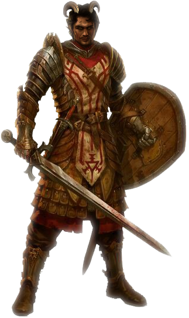

Keth-Nyr, Cairoan Pathfinder
Level 1 Fighter
| STR |
16 |
| DEX |
11 |
| CON |
12 |
| INT |
12 |
| WIS |
12 |
| CHA |
13 |
- Experience:
- Proficiency:
- AC: 18 (+0 dex +6 armor +2 shield)
- HP: 27/27
Inventory
- Desert scarf
- Chain mail (16 AC, disadvantage on stealth.)
- Shield
- Traveler's clothes
- Spear (1d6/1d8 versatile) 5ft range, thrown (20/60)
- Adamant Longsword (1d8/1d10 versatile)
- Glaive (1d10, heavy, reach, two-handed)
- Longbow (1d8, range 150/600, heavy, two-handed)
- (5) Arrows
- (12) Waterskins
- (15) Rations
- Dagger
Proficiencies
- Armor: All armor, shields
- Weapons: Simple weapons, martial weapons
- Tools: Balaclava, Weaver's Tools
- Saving Throws: Strength, Constitution
- Skills: Athletics, Intimidation, Perception, Survival
- Languages: Common, Infernal, Orcish
Class Features
- Fighting Style: Protection
When a creature you can see attacks a target other than you that is within 5 feet of you, you can use your reaction to impose disadvantage on the attack roll. You must be wielding a shield.
- Action Surge
Starting at 2nd level, you can push yourself beyond your normal limits for a moment. On your turn, you can take one additional action on top of your regular action and a possible bonus action. Once you use this feature, you must finish a short or long rest before you can use it again.
- Battle Master Superiority Dice: 0/0 d2s. Save DC: 8
- Menacing Attack When you hit a creature with a weapon attack, you can expend one superiority die to attempt to frighten the target. You add the superiority die to the attack’s damage roll, and the target must make a Wisdom saving throw. On a failed save, it is frightened of you until the end of your next turn.
- Maneuvering Attack When you hit a creature with a weapon attack, you can expend one superiority die to maneuver one o f your com rades into a more advantageous position. You add the superiority die to the attack’s damage roll, and you choose a friendly creature who can see or hear you. That creature can use its reaction to move up to half its speed without provoking opportunity attacks from the target of your attack.
- Disarming Attack When you hit a creature with a weapon attack, you can expend one superiority die to attempt to disarm the target, forcing it to drop one item of your choice that it’s holding. You add the superiority die to the attack’s damage roll, and the target must make a Strength saving throw. On a failed save, it drops the object you choose. The object lands at its feet.
Teifling
- +2 Charisma, +1 Intelligence
- Size: Tieflings are about the same size and build as humans. Your size is Medium.
- Speed: Your base walking speed is 30 feet.
- Darkvision: Thanks to your infernal heritage, you have superior vision in dark and dim Conditions. You can see in dim light within 60 feet of you as if it were bright light, and in Darkness as if it were dim light. You can't discern color in Darkness, only shades of gray.
- Hellish Resistance: You have Resistance to fire damage.
- Infernal Legacy. You know the Thaumaturgy cantrip. When you reach 3rd level, you can cast the Hellish Rebuke spell as a 2nd-level spell once with this trait and regain the ability to do so when you finish a Long Rest. When you reach 5th level, you can cast the Darkness spell once with this trait and regain the ability to do so when you finish a Long Rest. Charisma is your spellcasting ability for these Spells.
Background: Outlander
You have an excellent memory for maps and geography, and you can always recall the general layout of terrain, settlements, and other features around you. In addition, you can find food and fresh water for yourself and up to five other people each day, provided that the land offers berries, small game, water, and so forth.
Personality
- Ideal: Money is power.
- Bond: Try as I might, I can't let an innocent person be hurt through inaction.
- Flaw: I'm young and headstrong and I think I'm indestructable.